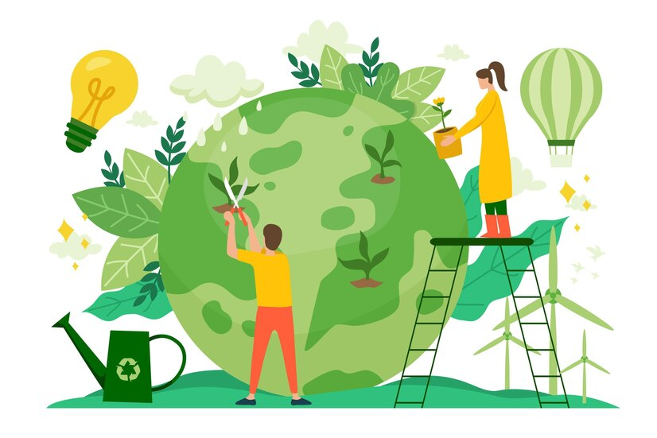

Pro Planet Person

Pro Planet person
A "pro-planet person" is like a guardian of the Earth,a passionate defender of all things green and blue.They're the eco-warriors.They're the ones who hug trees and high-five the wind.They're not just about recycling; they're about reimagining our relationship with the planet. In essence, a pro-planet person is someone who sees Earth not just as a home but as a precious gift to cherish, protect, and nurture for generations to come.